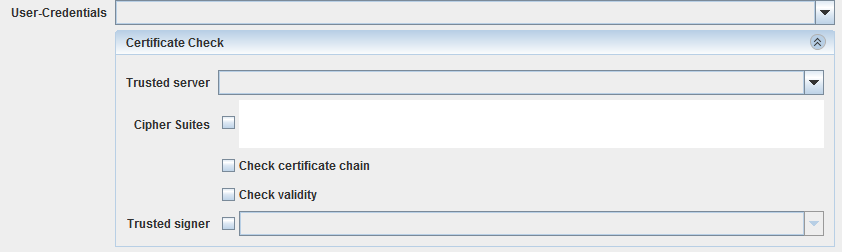
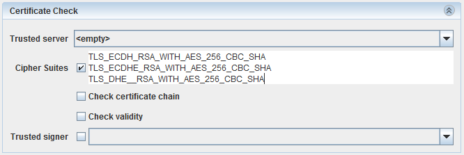

Configuring TLS

Topic content
Description
Transport Layer Security - TLS (successor to SSL) ensures trusted and encrypted communication between two parties. Orchestra supports TLS communication using HTTPS protocol. Both client and server authentication is possible.
Creation
TLS configuration is part of the service endpoint definition (on a port level) in Service Declaration and Service Provider. As such, it cannot be created independently. TLS configuration is either used in service declaration configuration (by default client side) or in service provider configuration (server side).
Please refer to SoapBinding for service declaration and SoapBinding for service provider
Configuration
Prerequisites
Orchestra client authentication (authentication of Orchestra web service client to external web service) requires a type of credential, whereas trusted server certificate has to come from type of credential.
Authentication of third parties to Orchestra service requires the use of credential type.
You will need such Credentials in order to configure TLS properly.
Service declaration configuration
On service declaration level, you can configure client authentication and, optionally, require server authentication.
When you want to use TLS on the client side, please select a service you want to configure from the tree and then navigate to Select port you want to configure and the following content will be shown in the configuration panel:
Client transport settings
In the combo box you need to select Uniform resource locator environment entry. Please have in mind that the selected URL must be an URL with HTTPS protocol. There is also possibility for creating a new URL or editing an existing one (Buttons and at right side).
Set desired timeouts for connection and read operations using and fields.
combo box allows you to select authentication type - in our case we need to select . After selecting this value the combo box will be enabled and the panel will expand:

In the combo box you need to select a Therefore create a Credential of type technical login and add a public/private keypair in pkcs#12-format.
Optionally, if you want to check server credentials, you should select a Therefore create Credentials of type trusted server and add a public key certificate.
Enforcing specific to be used in TLS is possible simply by adding comma separated values in the text box(e.g. "TLS_ECDH_RSA_WITH_AES_256_CBC_SHA,TLS_ECDHE_RSA_WITH_AES_256_CBC_SHA,TLS_DHE_RSA_WITH_AES_256_CBC_SHA").

Also, you can enforce certificate chain and validity check by selecting chain and boxes.
With these settings your web service client would be set and ready for TLS.
Service provider configuration
In case we are implementing a server side component, we need to configure authorization, i.e. select credential that we trust and set roles that are required for using service.
Client authentication using client certificate is hidden from configuration since client authentication to Orchestra service is based on all defined credentials of type . When external client tries to connect, Orchestra checks if certificate that is presented by client exists in Orchestra credentials. Only if certificate is contained in Orchestra credentials, client is successfully authenticated and credential that contains certificate is selected as credential that has to be authorized. After successful authentication, authorization is performed by trying to match required roles (defined on service level) and client roles (defined on credential level).
Select your service provider in tree and then navigate to Select the port you want to configure:
Service transport settings
The transport protocol is by default set to HTTP. Please select option in combo box. Click on arrow at the right side of field in order to expand authentication options panel:
Configuring authorization and server authentication
Here, in you need to select .
|
By default, orchestra uses its own, self-signed public certificate. Keystore is configured within orchestra_configuration.xml in "SSLSettings" group. Server side authentication is done with corresponding private key that comes from configured keystore. Note that you will have to put Orchestra.crt in the client side trust store to establish TLS between Client and orchestra successfully. |
After you select described options you will be able to additionally set authorization level by selecting roles in Authorization table:

Configuring authorization
Roles shown in the table come from defined Security Roles. By selecting specific roles, you are allowing credentials that have at least one of the selected roles assigned to call the service.
|
Always use HTTPS protocol for URLs that are used in TLS |